When you complete this learning material, you will be able to:
Explain the purpose and design of steam turbine auxiliaries, control, and monitoring equipment.
You will specifically be able to complete the following tasks:
Describe the purpose, design and components of a turning gear.
When a turbine is left cold and at a standstill, the mass of the rotor tends to cause the rotor to sag slightly. This is called bowing . If left at a standstill while the turbine is still hot, the lower half of the rotor cools faster than the upper half. The rotor bends upwards. This is called hogging . In both cases, the turbine is difficult, if not impossible, to start up due to rubbing within the bearings, glands and diaphragms. To overcome this problem, the manufacturer supplies large turbines with a turning or barring gear. It consists of an electric motor and sets of reducing gears that turn the turbine shaft at low speed. The normal speed of a turbine rotor on barring gear is between 20 and 40 rpm, although some designs turn as slowly as 3 rpm.
The distance between bearings of large turbines is considerable (3 to 10 meters). Rotors operating at temperatures above 400°C need turning after shutdown to ensure uniform cooling takes place. The fan action in the casing caused by the slow turning turbine blades prevents temperature variations.
Before a cold turbine is started up, the barring gear turns it for approximately three hours. When a turbine is shut down, the barring gear turns it for the next 24 hours. The exact time required depends on the difference in temperature between the stationary and rotating parts. If a hydrogen-cooled generator is involved, the turbine is kept on barring gear to prevent loss of hydrogen through the shaft seals. The turning gear, illustrated in Fig. 1, uses a belt drive with a worm and wheel to reduce the motor speed. A yoke supports the disengaging gear wheel. An oil-operated piston rotates the yoke about the worm shaft to engage or disengage the turning gear from the turbine shaft.
The location of an under-slung barring or turning gear is shown in Fig. 2. This view shows a tandem double-flow turbine being assembled for testing. Positioning of the barring gear at the side of the bearing enables the pinion to engage the shaft below the turbine centre line. The top portion of the diagram illustrates a side-mounted barring gear with a vertical driving motor and their location in relation to the turbine shaft.
With the turbine revolving at slow speeds (on barring gear), the main lubricating oil pump does not provide sufficient oil to lubricate the bearings. An auxiliary oil pump is used when the turning gear is in operation. A separate motor driven oil pump is provided to supply oil to the bearings instead of using the turbine-driven oil pump.
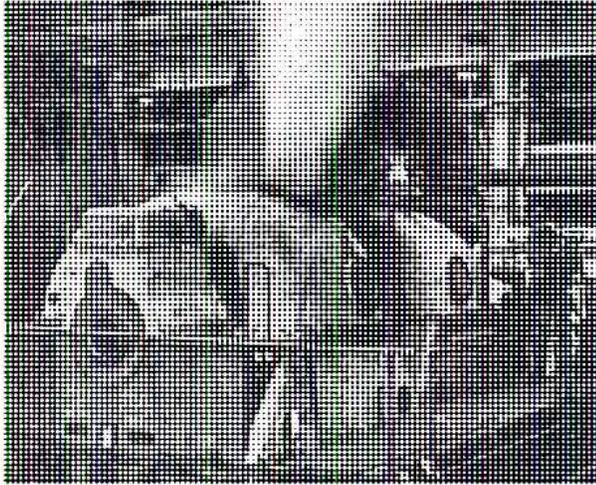
Figure 1
Turning Gear
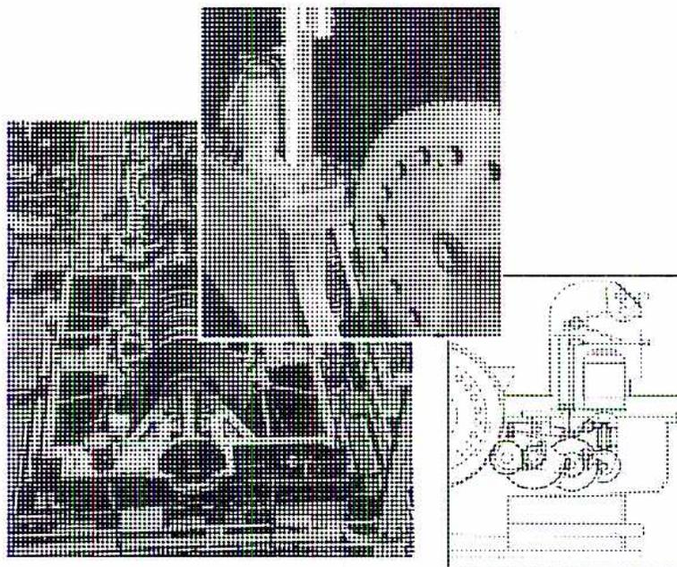
Figure 2
Illustrations of Barring (Turning) Gear
Describe the purpose, design and components of an adjusting gear.
Efficient operation of a turbine depends to a large extent on the maintenance of the correct clearances between fixed and moving elements. Excessive clearances cause increased steam consumption and reduced clearances may cause blade rubbing.
When a turbine is constructed, the clearances are carefully set and a record is kept at the plant. When the top halves of the casing are removed, the clearances are checked against the record. Care is taken to ensure that the rotors are in the running position when taking measurements. Provision is made to move the rotor axially to a position for lifting it from the casing. Particular care is necessary with clearances of velocity stages fitted to the high-pressure end of impulse machines, as in Fig. 3. A thorough check of clearances is essential if replacement blades, nozzles or packing rings have been installed.
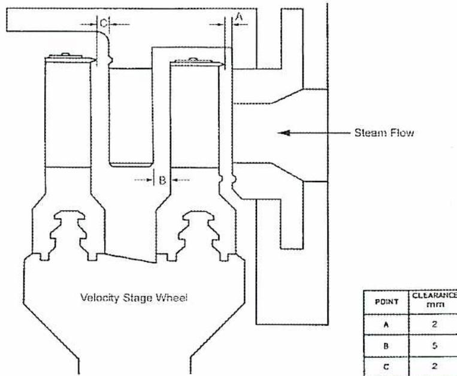
Figure 3 is a cross-sectional diagram of a turbine velocity stage. It shows a 'Velocity Stage Wheel' with blades, positioned within a casing. Three clearances are indicated: 'A' is the radial clearance between the wheel blades and the casing; 'B' is the axial clearance between the wheel and a fixed element; 'C' is the radial clearance between the wheel hub and the casing. An arrow labeled 'Steam Flow' points from right to left through the stage.
| POINT | CLEARANCE mm |
|---|---|
| A | 2 |
| B | 5 |
| C | 2 |
Figure 3
Velocity Stage Clearances
The efficiency of reaction turbines depends upon the close clearances between the stationary and moving blades. To protect the axial seals, an adjustable thrust bearing is used as shown in Fig. 4. The thrust block is cylindrical and fits like a piston in the cylinder. The thrust block can be adjusted axially. The axial position of the rotor is controlled within strictly defined limits. During startup, the thrust block is moved against a stop in the direction of the turbine exhaust. This setting is for maximum clearance between the stationary and moving blades so that uneven temperatures during startup do not cause rubbing. When the turbine is heated up and loaded, the thrust block is adjusted to reducing the clearances to minimum, thus producing maximum efficiency.
![Figure 4: Turbine Thrust Adjusting Gear. The diagram consists of two parts: 'End View' on the left and 'Part Section Through X-X' on the right. The 'End View' shows a circular gear assembly with a hand crank on the left, a large central gear, and several smaller gears around the perimeter. The 'Part Section Through X-X' shows a cross-sectional view of the gear assembly, revealing internal components including a cylindrical thrust block, gears, and housing. A vertical dashed line labeled 'X' at both ends indicates the plane for the cross-section.](8e592c58b5074d79831ff650c2c636df_img.jpg)
Figure 4
Turbine Thrust Adjusting Gear
Explain critical speed.
If a turbine rotor were constructed so that it was an absolutely symmetrical body, its balance would be perfect. When rotating, the symmetrical rotor would have no vibration caused by out-of-balance mass. Errors of balance do take place in actual rotors. They are caused by:
These are kept to a minimum by careful workmanship. The completed rotor is balanced both statically (balanced at rest) and dynamically (balanced in motion) before being put into service.
Static balancing involves supporting the shaft journals on transverse “knife edges. The tendency of the rotor to roll is measured. Then mass is added or removed to delete the tendency to roll.
Dynamic balancing is done after the static process in a machine with flexible bearing supports. The rotor is run up to speed by an electric motor, and vibrations are measured. Mass is added or removed to the rotor before it is retested. The process is repeated until the vibration readings are in an acceptable range. The balanced rotor must have very low vibrations when running at designed speed. New rotors are balanced at the factory. Overhauled or refurbished rotors must also be dynamically balanced.
Note: At speed, a balanced rotor shows no more than 0.025 or 0.05 mm eccentricity.
A turbine shaft, supported between its two bearings can be likened to a piano wire. If the wire is “plucked,” it vibrates with a natural frequency. Similarly, shaft rotation has a natural frequency depending upon its stiffness, as illustrated in Fig. 5. If the shaft is rotated, any out-of-balance force rotates with it and tends to deflect the shaft. As the speed increases, the deflection also increases. When a particular speed is approached (corresponding to the natural frequency of the shaft) the deflection increases very rapidly and may be sufficient to permanently bend the shaft.
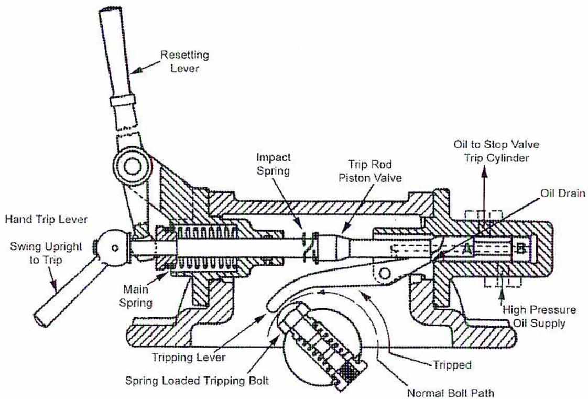
Figure 5
Exaggerated Bow of a Shaft
This speed is called the critical speed and is determined in the design stages of the machine. It depends upon the length of shaft between supports, the shaft diameter and the shaft stiffness. If the critical speed is approached rapidly, there is little time for the deflection to grow. Once above this speed, the deflection begins to decrease until smooth running is again achieved. Turbine manufacturers recommend passing through the critical speeds quickly. A turbine shaft, running in the critical speed zone, can be identified by very high vibrations throughout most of the turbine bearings.
A turbine rotor may have more than one critical speed. The others occur as the shaft takes up the forms shown exaggerated in Fig. 6.
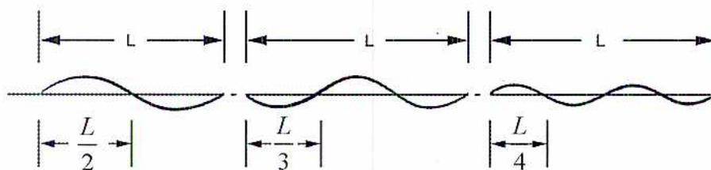
Figure 6
Forms of Whirling Shaft at Critical Speeds
These are the second, third and fourth critical speeds. After passing through the first critical speed the shaft settles down until the second critical speed is approached when it commences to bend in the curve shown with a nodal point at the centre of its length shown in Fig. 6 as \( \frac{L}{2} \) . Generally, the operating speed is arranged to be between the first and second critical speeds, though some short rotors may be so “stiff” that the operating speed is below the first critical speed.
Some turbine rotors tend to lose their straightness when heated. Many manufacturers guard against “thermal instability” by heating the rotor while it is slowly revolved. The eccentricity is measured during the process.
Most rotors tend to “bow” on heating. The deflection increases with temperature up to a point and then decreases again until the shaft is nearly straight. It remains in this condition when cooling down and shows no tendency to bend when the heating process is repeated. This process of heating and cooling of the rotor is carried out before blading is installed. This is a precaution to prevent rotor vibrations when the turbine is put into service.
Describe the design and components of lubricating oil and jacking oil systems.
Turbines are the prime movers that many plants depend upon. They must be provided with a reliable supply of lubrication oil. The size of the turbine determines whether to use a simple or complex lubricating system. Turbines of less than 150 kW, used to drive auxiliary equipment, are often provided with ring-oiled bearings.
Moderate-sized turbines, particularly if driving through a reduction gear, may have both ring-oiled bearings and a circulating system. These pressurized oil systems not only supply oil in the form of a spray to the gears but also supply oil to the bearings of the gearbox and the turbine.
Large turbines have circulating systems supplying oil to the:
A typical circulating oil system for a turbine and generator set is shown in Fig. 7. The oil pumps take suction from the oil tank through strainers and discharge the oil at high pressure, 552 to 827 kPa. From the strainers, the oil flows in two different directions:
Power oil, acting in servomotors, uses hydraulic pressure to open stop valves and governing valves. Governor relay oil acts as a sensitive regulating medium. It transmits oil pressure signals to various parts of the governor oil system. The power oil and the governor relay oil have to be at high pressure.
Lubrication oil is at a lower pressure, typically in the 69 kPa to 138 kPa range. Before the oil passes to the coolers, it flows through a pressure-reducing valve. If the turbine has been operating for a length of time, and the oil is at operating temperature, the oil from the oil tank will be quite warm. Therefore, the oil will need cooling in the oil coolers, before it flows through the bearings. Typical outlet temperatures, from the coolers, are in the 43° to 49°C range.
Inside the bearings the oil acts as a lubricant between moving surfaces and as a coolant for the bearings. From the bearings, the oil drains into a return header leading back to the oil tank. A thermometer is placed in each return line from the bearings and indicates bearing temperature.
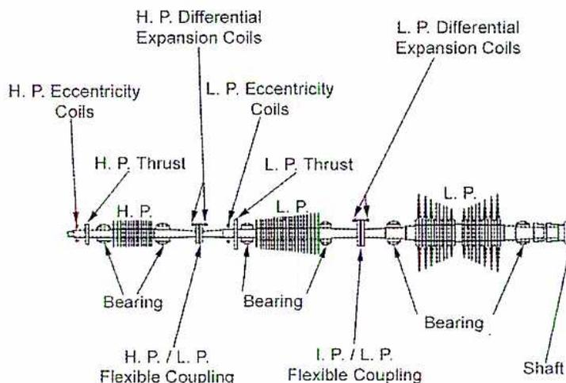
The diagram illustrates a typical lubricating oil system. At the top, a 'MAIL OIL PUMP' is connected to the 'TURBINE' shaft. Oil from this pump is distributed to the 'TURBINE', 'GENERATOR', and 'EXCITER' bearings. An 'OIL DRAIN' line with a thermometer (AT) is shown returning oil from the bearings to the 'OIL TANK'. The 'OIL TANK' includes a 'LEVEL' indicator and a 'STRAINER'. From the tank, oil is drawn through an 'OIL HEATER' and an 'OIL PURIFIER'. A separate line from the tank leads to an 'A.C. MOTOR DRIVEN AUXILIARY OIL PUMP' and a 'MOTOR DRIVEN EMERGENCY STANDBY PUMP'. These pumps feed into a line with a 'PRESS REDUCING VALVE', which then splits into three 'OIL COOLERS'. The cooled oil is then directed to a 'GOVERNOR RELAY OIL SUPPLY' and back to the 'MAIL OIL PUMP'. A 'JACKING OIL PUMP' is also connected to the main oil line, with its output directed to the turbine bearings.
Figure 7
Typical Lubricating Oil System
Large turbines, with heavy rotors, are generally equipped with a jacking oil pump. It supplies the lower part of the bearings with oil, at approximately 2 000 to 10 000 kPa, lifting the shaft and supplying lubricating oil. Oil pressure lifts or jacks the shaft a few millimetres, so there is no metal-to-metal contact during the initial movement of the rotor. Jacking of the shaft reduces the load on the barring gear motor. Jacking oil is applied before starting the barring gear and while operating the turbine at slow speed. The jacking oil pump is shut down at turbine speeds of 50 to 60 rpm.
The turbine/generator lube oil system, shown in Fig. 8, incorporates a jacking oil pump. The jacking oil pump, # 4 on the drawing, takes suction from the lube oil header. The jacking oil pump boosts the pressure and feeds oil to the bottom of the bearings. After the jacking oil leaves the bearings, it then flows into the main return header along with the lube oil being drained from the bearings. These combined oil flows drain by gravity back to the lube oil tank.
![Schematic diagram of a lube oil system for a turbine/generator. The diagram shows the flow of lubricating oil, jacking oil, and air. Lubricating oil (solid lines) is pumped by the Main Oil Pump (1) from the Oil Tank (8) through the Oil Filter (6) and Twin Oil Cooler (5) to the bearings. Jacking oil (dash-dot lines) is pumped by the Jacking Oil Pump (4) from the lube oil header to the bottom of the bearings. Emergency oil (dashed lines) is pumped by the Auxiliary Oil Pump (2) and Emergency Oil Pump (3) through Non-Return Valves (13) to the bearings. Air (dashed lines) is drawn from the Air Filter (10) through the Extractor Fan (9) and Sludge Collector (11) to the bearings. The return oil (dash-dot-dot lines) flows from the bearings through the main return header to the Oil Tank (8). The diagram also includes a Constant-Pressure Valve (7) and a Temperature Controller (12).](4e4be0bd8b235167902f2c03e41da651_img.jpg)
| T | Turbine | 1 = Main Oil Pump | 7 = Constant-Pressure Valve |
| G | Generator | 2 = Auxiliary Oil Pump | 8 = Oil Tank |
| — | Lubricating Oil | 3 = Emergency Oil Pump | 9 = Extractor Fan |
| - - - | Oil Drain Line | 4 = Jacking Oil Pump | 10 = Air Filter |
| - . - | Jacking Oil | 5 = Twin Oil Cooler | 11 = Sludge Collector |
| - - - | Air | 6 = Oil Filter | 12 = Temperature Controller |
| 13 = Non-Return Valve |
Figure 8
Lube Oil with Jacking Oil System
Describe the design of speed reducing gears.
Steam turbines operate at speeds higher than the required operating speed of the driven machine. Examples of this include turbine-driven:
In these instances reduction gear sets are used to reduce the shaft speed of the turbine to suit that of the machine being driven. Reduction gear sets used on medium and large-sized steam turbines are housed in an oil-tight casing. They are connected to the turbine and driven unit by flexible type couplings. Small turbines may be designed so that the gear housing is integral with the turbine casing. The pinion may even be connected directly to the rotor shaft. This type of arrangement is shown in Fig. 9.
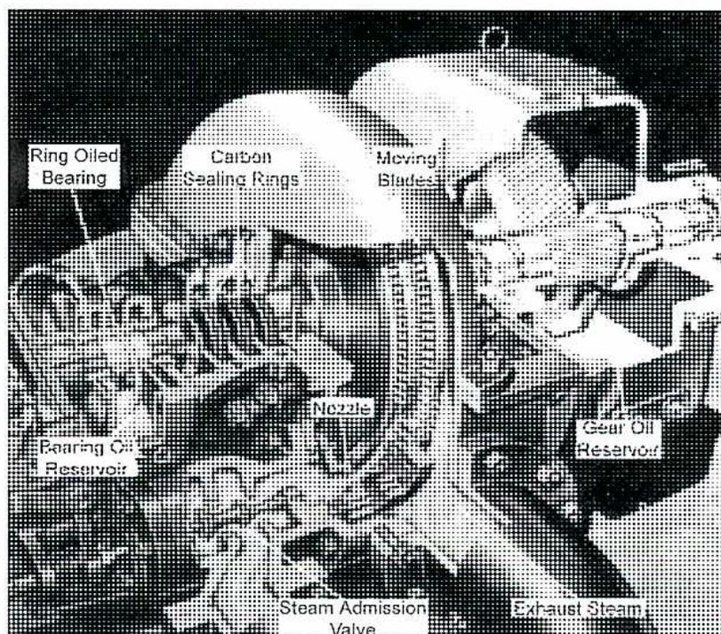
The diagram illustrates a cross-section of a steam turbine and gear reducer assembly. Key components labeled include:
Figure 9
Turbine Driver with Gear Reducer
Fig. 10 shows a speed reduction gearbox with the top portion of the cover removed. The driver is connected to the coupling of the small gear shaft. The driven machine is connected to the opposite end of the large gear shaft. A pipe from the oil pump supplies oil mist to the gears at their mesh point. Note that the gears are set at an angle to reduce gear noise and vibration.
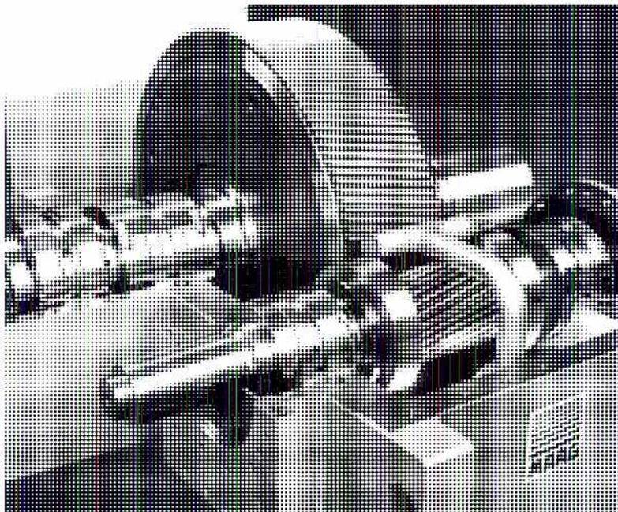
A black and white photograph showing the internal components of a speed reduction gearbox. The top cover is removed, revealing a complex assembly of gears, shafts, and bearings. A small gear shaft is visible on the left, connected to a coupling. A large gear shaft extends towards the right. A pipe is visible, likely for oil mist delivery. The gears are mounted on a common shaft, and the overall structure is robust and industrial.
Figure 10
Gears in a Speed Reduction Gear Drive
Describe the design and components of flexible couplings.
Couplings are used to connect shafts of rotating equipment. Flexible couplings permit an axial movement of the driven shaft, and they can also be designed to transmit or eliminate end thrust from the driven unit to the turbine. Flexible couplings can accommodate minor misalignments or bearing wear. They are not intended to overcome shaft misalignment due to careless or faulty assembly.
Flexible couplings used on large direct-connected units are often enclosed in the same housing as the turbine and driven unit bearings. They are lubricated in an oil-tight case. Oil is supplied by the main lubricating oil system. Flexible couplings are often used to connect the turbine rotor to its driven machine shaft or to connect the rotors of tandem compounded turbines to each other. They are designed to absorb the differential expansion of the shafts due to temperature changes and, to a certain extent, any misalignment that occurs due to settlement of foundations or temperature changes.
Excessive wear on flexible couplings is often the result of faulty shaft alignment. A flexible coupling is not designed to act as a universal joint. It can take care of very small amounts of shaft misalignment, but its primary purpose is to allow for relative axial movement between the shafts it connects.
Coupling components must be kept in good condition. They are taken apart, inspected and cleaned when maintenance is performed on the driver. Couplings can lock up (fail to move) transferring axial movement through the shaft. This can cause overloading of thrust bearings and vibration problems.
There are many types of flexible couplings. They are selected based on the application and the type of machines they connect. Normally, the couplings are lubricated, but more types of dry couplings are being introduced. They are often made of hard rubber compounds and require no maintenance and do not lock up.
The coupling in Fig. 11, for turbines of small and medium output, has flanges keyed to the shafts. The coupling bolts are screwed into one flange and rubber bushes with metal cores are fitted over the plain ends of the bolts. The rubber bushes have a small clearance in the holes of the other coupling flange. This type is called a “pin and grommet coupling”
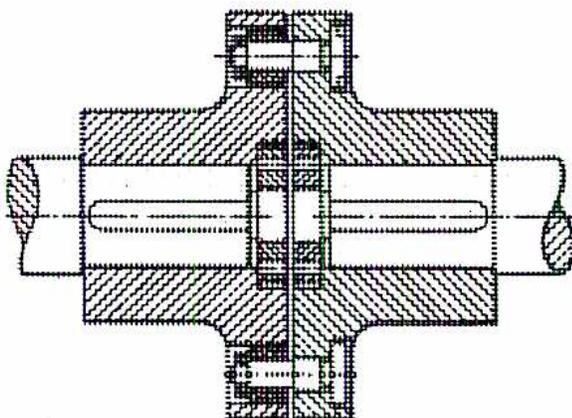
Figure 11
Turbine Coupling
Fig. 12 shows a coupling in which the drive between two shafts is taken by a forged steel muff bolted to the two shaft hubs. The muff is rigid in torsion but gives a limited amount of flexibility radially.
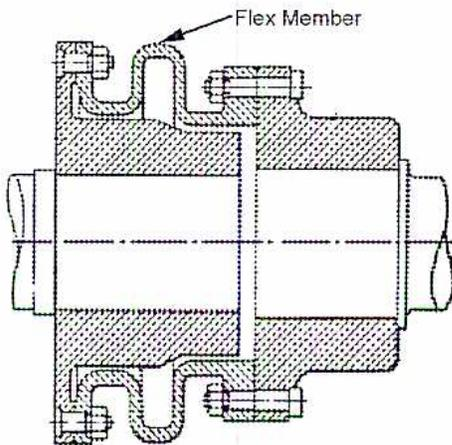
Figure 12
Semi-Flexible Coupling
Gear or tooth type couplings are shown in Figs. 13 and 14. The shaft hubs have a number of teeth around the periphery. The sleeve has a matching set of teeth to transfer torque to the drive while allowing small axial movements between the shafts.
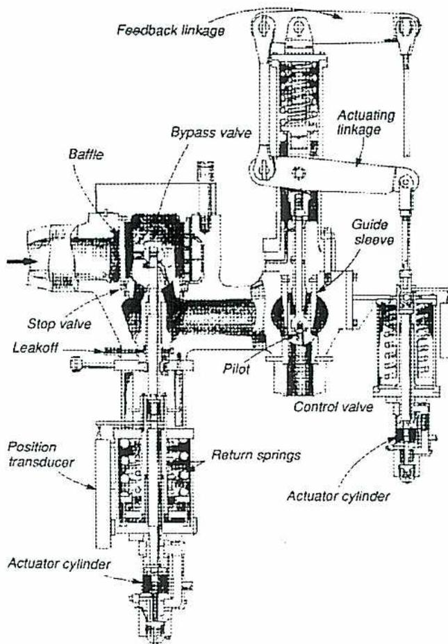
Figure 13
Gear Type Flexible Coupling
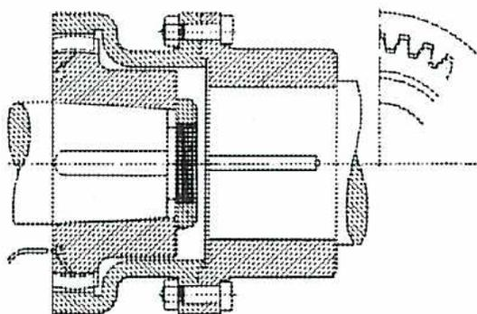
Figure 14
Gear Type Flexible Coupling
Fig. 15 shows a resilient grid (often called a Bibby or Flexsteel coupling). It has a tempered steel spring as the driving medium between the two hubs. The hubs are keyed to the shafts.
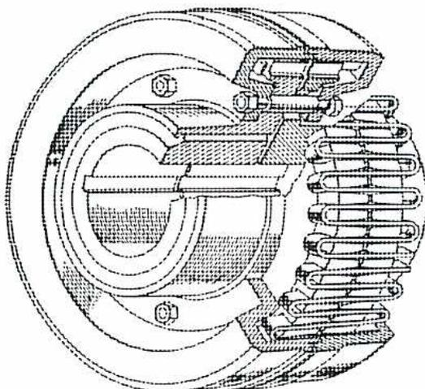
Figure 15
Resilient Grid (Flexsteel) Coupling
Describe the purpose and design of steam turbine governors and governor systems.
Turbine governing systems vary the steam flow to keep the speed of the turbine constant with varying loads or to hold the pressure constant with varying demands for process steam. The governor on a turbine driving an alternator controls the turbine inlet steam flow to maintain constant speed with varying alternator load. In a backpressure turbine supplying exhaust steam for process work, the steam supply to the turbine is controlled to maintain a constant backpressure.
In an extraction turbine, the governor controls the steam flow so that both the turbine speed and the pressure of steam, at the point of extraction, are maintained reasonably constant. This involves regulation of the total amount of steam admitted to the inlet stages of the turbine and of the steam supplied to the turbine stages following the extraction point.
Speed droop is the change in speed caused by an increase in load. An ideal governor can maintain a constant speed at any load. But, mechanical losses within most governors mean that they cannot achieve this speed control. If the load on a turbine changes from zero (no-load) to maximum (full-load), the turbine slows down and the governor may not be capable of restoring the turbine to set speed.
The difference between the no-load and full-load speed, expressed as a percentage of the set speed, is called the “droop” of the governor. As the load increases, the speed will “droop” below the set speed. For example, if the set speed of a turbine is 5000 rpm, where it operates with no load, and the governor system can only achieve 4500 rpm, when the turbine becomes fully loaded, the droop of the governor is \( (500/5000) \times 100 = 10\% \) . Governors with low droop are more sensitive to load changes and generally have more accurate control than governors with high droop.
Isochronous governing gives perfect speed regulation with zero speed droop. An isochronous governor regulates the turbine at constant speed at all loads, so the speed regulation or droop is zero percent. Isochronous governing is used when prime movers are operating alone.
If turbines are sharing load in a parallel operation, an action called hunting can occur. Each turbine attempts to pick up the change in load and they begin “fighting” each other for control. This creates an uncontrollable cycling of the load and turbine speeds. The result may be that one machine ends up fully loaded while another machine may have no load.
Governors fall into two main classes:
The speed-sensitive governor is a proportional-action controller because each change in power causes a change in the turbine speed. The governor controls the opening of the control valves as a function of this speed change. Due to the governor speed droop, the frequency is not constant over the full range of load without an external adjustment.
The speed-sensitive governor may consist of the following types:
Nozzle governing is only used in impulse turbines. Regulating the flow of steam to inlet nozzles and the turbine blades maintains a set turbine speed. Common nozzle arrangements are the bar-lift and the cam-lift systems.
Fig. 16 shows the bar-lift design with a row of inlet nozzles above the first stage turbine blading and a set of nozzle valves, or plugs, held by a horizontal bar. Notice that the lengths of the stems on these plugs vary. The flyweight action moves the bar up and down to open and close the nozzles as required. The different lengths of the plug stems determine the sequence in which they open and close.
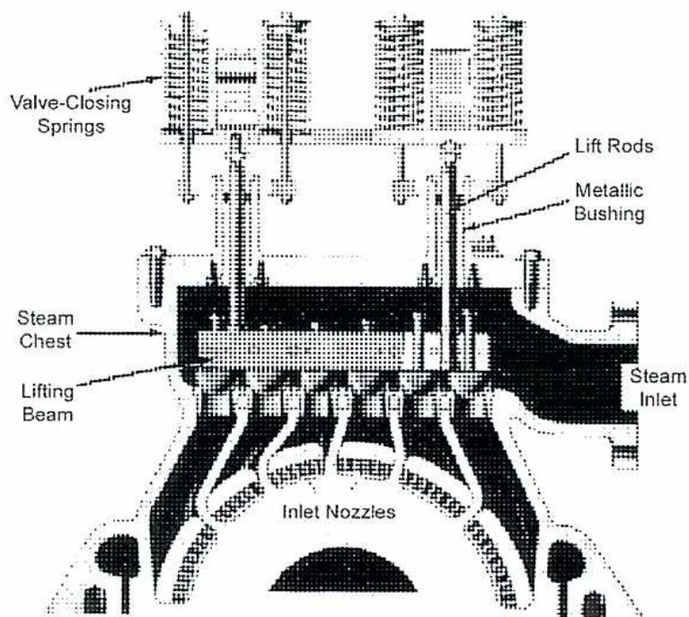
Figure 16
Bar-lift Nozzle Control Gear
Other designs use a cam-like device to control the sequence and opening of each nozzle. Fig. 17 illustrates how oil under governor control acts on the underside of the spring-loaded operating piston. As the piston rises, a rack on the piston rod causes a layshaft to rotate. On this layshaft are a number of cams, one for each admission poppet valve. Each cam operating through a follower and a rocker arm actuates a steam valve which supplies a group of nozzles. The cams on the layshaft are indexed so that the valves are opened in a predetermined sequence and closed in the reverse order.
![Figure 17: Cam-lift Steam Admission Valves. This cross-sectional diagram shows a more complex control mechanism. On the left, an 'OIL POWER CYLINDER' contains a piston. A vertical rod connects this piston to a horizontal 'LAYSHAFT'. The layshaft has several cams of varying sizes. Each cam interacts with a 'FOLLOWER' and a 'ROCKER ARM' assembly. These assemblies are connected to a series of vertical rods that operate steam admission valves. Below the valves, a group of 'INLET NOZZLES' leads to a large 'STEAM INLET' at the bottom.](de5063b406eb787334c453b07b7dcc52_img.jpg)
Figure 17
Cam-lift Steam Admission Valves
An example of throttle governing is shown in Fig. 18. A single valve at the inlet to the turbine adjusts the steam flow equally into the turbine casing and to the nozzles. The inlet, or throttle valve, responds to the governor to increase or decrease the steam flow for more or less speed. A hydraulic servomotor is often used to help move the throttle valve. In larger turbines, there may be more throttle valves arranged in parallel in the steam line.
Throttle governing is used with reaction turbines because the pressure drop in the moving blading requires steam admission to the full circumference. The multi-valve arrangement supplying steam to nozzle groups cannot be used. With throttle governing, one or two control valves control the load from 0% to 100%.
![Diagram of a Mechanical-Hydraulic Governor with Servo. The diagram shows a turbine shaft connected to a Speed Changer. A mechanical linkage connects the Speed Changer to a vertical lever. This lever is part of a hydraulic system. On the right, a 'Servo Motor' assembly contains a 'High Pressure Oil Supply' inlet, an 'Oil Pilot Valve', and a 'Servo Piston'. The piston is connected to the vertical lever. 'Drain Oil' lines are shown at the bottom of the servo motor assembly. A legend indicates that hatched areas represent 'High Pressure Oil Supply' and cross-hatched areas represent 'Drain Oil'.](16d86083b7ebdc40c0647a1d3d46ace7_img.jpg)
Figure 18
Mechanical-Hydraulic Governor with Servo
Bypass or overload governing is used on both impulse and reaction turbines. It consists of two throttling valves: one at the inlet of the first stage of the turbine, and the other at an inlet downstream from the first few stages. The purpose of the second inlet point is to allow the turbine to maintain speed while producing extra power, during high load or overload conditions.
Fig. 19 shows a steam chest with a stop and trip valve (on the left), followed by the main steam throttle valve and the bypass throttle valve (on the right). This steam chest/valve arrangement is mounted on the turbine so as to direct steam to the appropriate nozzles, as shown in the turbine cross-section of Fig. 20.
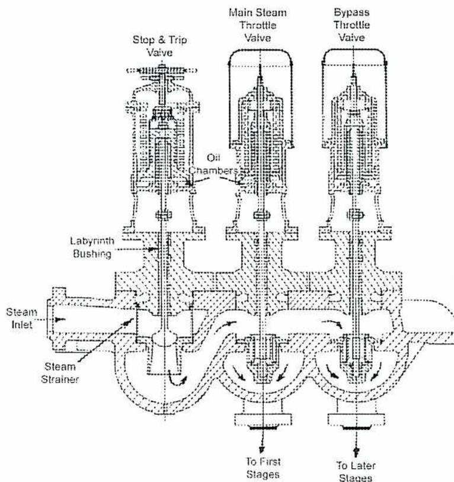
A detailed cross-sectional diagram of a steam chest assembly. On the left is the 'Stop & Trip Valve', in the center is the 'Main Steam Throttle Valve', and on the right is the 'Bypass Throttle Valve'. Each valve has a vertical stem passing through a 'Labyrinth Bushing'. 'Oil Chambers' are located around the stems of the main and bypass valves. At the bottom left, an arrow points to a 'Steam Strainer'. The 'Steam Inlet' is on the left side of the chest. The internal passages lead from the valves to two outlets at the bottom: 'To First Stages' from the main valve and 'To Later Stages' from the bypass valve. Arrows indicate the flow of steam through the internal passages.
Figure 19
Steam Chest with Stop, Trip and Throttle Valves
(Courtesy of C.A. Parsons)
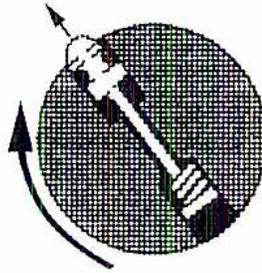
A cross-sectional diagram of a bypass-governed turbine. The diagram shows the internal components of the turbine, including the main steam inlet, bypass steam inlet, feed heating bleed points, coupling, steam exhaust, oil pump and governor drive, and thrust block. The turbine is mounted on a base.
Figure 20
Bypass-Governed Turbine
Fig. 21 shows the components and arrangements of a simple mechanical governor. A set of weights, called flyweights, that pivot and move in and out are attached to the end of the turbine shaft. The shaft ends of the flyweights contact the end of a governor, which is free to move to the left or right, but is also acted upon by a counterspring. A governor valve, or steam inlet valve, is mounted at the inlet of the turbine. It is connected to the external steam supply line. The valve disc is double seated and has a stem that extends out of the valve casing. A lever, connecting the valve stem to the governor rod, is pinned and is free to pivot on a fixed fulcrum. This allows movement in the governor rod to be transmitted to the valve stem.
Rotation of the turbine shaft causes the flyweights to pivot outwards due to centrifugal force. The greater the speed of rotation the greater the centrifugal force and the further outward the flyweights move. Movement of the flyweights causes movement of the governor rod which causes movement of the governor valve.
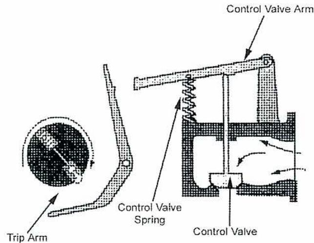
The diagram illustrates a mechanical governor system. At the top, a 'Turbine Shaft' is connected to a 'Flyweights' assembly. A 'Spring' is shown within the flyweight mechanism. A 'Governor Rod' extends from the flyweights to a vertical 'Fulcrum' point. Below the fulcrum, the rod connects to a 'Valve Stem' which operates a 'Governing Valve'. The valve is positioned to control 'Steam From Supply Line' entering and 'Steam to Turbine Nozzles' exiting. The entire assembly is housed within a mechanical frame.
Figure 21
Mechanical Governor
The operation of a simple centrifugal mechanical governor is shown in Fig. 22. If the load on the turbine increases, it slows down slightly. This causes the flyweights to move inwards (due to less centrifugal force) and the governor rod moves to the left due to the force of the counterspring. The lever pivots at the fulcrum and the lower end moves to the right, thus opening the governor valve further. As more steam enters the turbine, the speed begins to increase. The flyweights move outwards again until the system becomes balanced at the set speed under the new load.
The disadvantage of simple mechanical governors is they have a high-speed droop, usually around 10%. They are not suitable for large machines or where control must be extremely accurate. Within limits, changing the pivot point at the fulcrum can reduce the effects of droop, so the governor rod movement has more affect on the governor valve movement.
![Figure 22: Simple Centrifugal Mechanical Governor. The figure consists of two cross-sectional diagrams, (a) and (b), showing the governor's operation. (a) Start-Up: The flyweights are pulled inward by a spring, compressing it. The sliding/rotating part is in a position to allow more fuel. (b) Running: As the rotating shaft speeds up, the centrifugal force overcomes the spring tension, moving the flyweights outward and the sliding/rotating part to restrict fuel flow. Labels include: Rotating Shaft, Flyweight, Bushing, Fixed Housing, and Sliding / Rotating Part(s).](c834b9abb4ddf70e5d10641f87d5ff5b_img.jpg)
Figure 22
Simple Centrifugal Mechanical Governor
The mechanical-hydraulic governor has a pilot valve and a hydraulic amplifier. This arrangement removes the direct linkage of the flyweights to the governor valve. The flyweights position an oil pilot valve that admits high-pressure oil to a piston that moves the governor valve. The advantage of the design is that the mechanical losses of the governor are greatly reduced. The flyweights require less force to position the pilot valve. The pilot provides the power to move the governor valve. The droop of this governor is reduced to almost zero.
Fig. 23 is a diagram of a mechanical-hydraulic governor. Oil, at approximately 500 kPa, is continuously supplied to the centre of the pilot valve. At normal speed, the pilot valve covers the oil ports to the amplifier cylinder so that oil cannot enter or leave the cylinder. If the load drops and the turbine speed increases, the flyweights move outwards. This pulls the pilot valve upwards, admitting oil to the top of the cylinder while allowing oil to drain from the bottom of the cylinder. The piston moves downward forcing the steam valve to close.
As the steam valve closes, the turbine speed decreases and the flyweights move inwards. At normal speed, the pilot valve returns to the central, or neutral, position and the turbine continues to operate at the set speed under the new load. Conversely, if the turbine load increases and the turbine speed drops, the pilot valve admits more oil below the piston causing the governor valve to open.
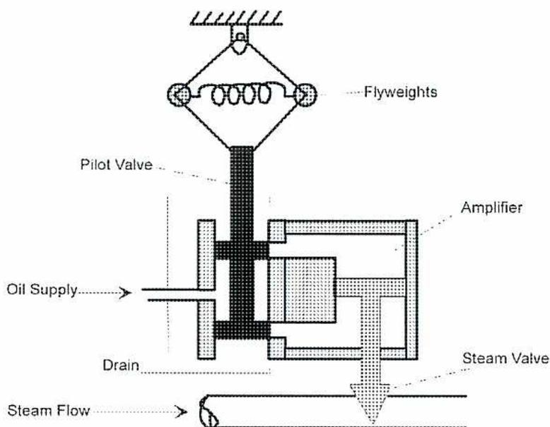
The diagram illustrates a mechanical-hydraulic governor assembly. At the top, a vertical shaft is connected to a set of flyweights and a coiled spring. The flyweights are shown in an outward position. Below the flyweights is a pilot valve assembly. To the left of the pilot valve, an 'Oil Supply' line enters the assembly, and a 'Drain' line exits from the bottom. The pilot valve is connected to an 'Amplifier' unit, which contains a piston. Below the amplifier is a 'Steam Valve' assembly. An arrow labeled 'Steam Flow' points to the left, indicating the direction of steam flow through the valve. The steam valve is shown in a partially open position, with a dashed line indicating the flow path.
Figure 23
Mechanical-Hydraulic Governor
A complete mechanical-hydraulic governor system is shown in Fig. 24. It demonstrates how components relate to each other to provide a complete governor system. Referring to the diagram, the turbine shaft drives a main, gear-type oil pump which supplies the hydraulic oil pressure to the various governor components. An electric motor drives an auxiliary oil pump which provides oil pressure during start-up of the turbine, until the main oil pump can provide sufficient operating oil pressure.
Before start-up, the overspeed trip assembly is manually re-latched so that the oil trip valve B is open, allowing oil pressure and flow to the other governor components. This includes the turbine stop valve which is held open by the pressure under the operating piston in cylinder C.
When the turbine is operating steadily, the spinning flyweights take a position balanced by their counterspring. Flyweight movement controls the position of a plunger sliding within sleeve G, which is part of the servo, or speed adjuster. The relative position of the plunger and the sleeve determines the opening of the oil ports in the sleeve.
High-pressure oil goes directly to the pilot valve K in the control oil cylinder. The pilot valve regulates the oil pressure below the throttle valve cylinder J increasing pressure when the speed is high. The position of the throttle valve responds accordingly.
The piston in the cylinder H determines the position of the moveable governor fulcrum which affects the droop, proportionally, and speed control of the governor. Oil to this cylinder is taken from the main oil supply, through valve F. The pressure in the line, and therefore the pressure below piston H are determined by the position of the oil ports at G in the servo. Adjusting the handwheel L changes the servo port openings causing more or less oil to be drained, affecting the pressure to cylinder H and causing the speed of the turbine to change. The movement of L may be done manually or it may be activated by a small electric motor with remote control.
In an overspeed situation, the overspeed trip closes the oil supply cylinder B. This causes all oil pressure to be lost beneath the trip valve and the throttle valve. The turbine comes to a quick stop due to immediate loss of the steam supply.
![Schematic diagram of a Mechanical-Hydraulic Governor System. The diagram shows a turbine shaft connected to a governor assembly. The governor assembly includes flyweights (E) and a speed adjust (L). The shaft also has an overspeed trip mechanism. Oil is supplied from a main oil pump (A) through a stop valve cylinder (B) and a pressure regulating valve (D). The oil then goes to the governor assembly, where it is controlled by a servo (G) and a control oil cylinder (H). The oil is also supplied to a turbine stop valve (C) and a turbine throttle valve (J). The oil is drained to a drain (To Drain) and an auxiliary oil pump (Auxiliary Oil Pump) is also shown.](e6df2733626a85205c1db682e6259c46_img.jpg)
The diagram illustrates a mechanical-hydraulic governor system for a turbine. On the left, a 'Main Oil Pump' (A) is connected to the 'Turbine Shaft with Overspeed Trip Mechanism'. The shaft also features 'Governor Flyweights' (E) and a 'Speed Adjust' (L). Oil from the main pump passes through a 'Stop Valve Cylinder' (B) and a 'Pressure Regulating Valve' (D), which has an outlet 'To Oil Cooler and Bearings'. An 'Auxiliary Oil Pump' is also connected to this line. The oil then flows through a valve (F) into a 'Servo' (G) which has a 'To Drain' outlet. From the servo, the oil goes to a 'Control Oil Cylinder' (H) and a 'Pilot Valve' (K). The pilot valve (K) is part of the 'Governor Assembly' and controls the 'Turbine Throttle Valve' (J). The 'Control Oil Cylinder' (H) is connected to the 'Governor Assembly' and also receives oil from the line after valve F. The 'Governor Assembly' includes a 'Speed Adjust' (L) and a 'To Drain' outlet. The 'Turbine Stop Valve' (C) is also connected to the oil line after valve F.
Figure 24
Mechanical-Hydraulic Governor System
Electronic-hydraulic governors use a combination of electronic and hydraulic controls. The turbine control console contains all the controls necessary for starting, accelerating, and loading the turbine and for controlling the extraction steam flows and pressures if applicable.
Referring to Fig. 25, the speed measuring device is a permanent magnet generator. It produces an electrical output signal that is amplified and compared to a reference signal by the computer in the control console. The difference is then amplified and applied to a servo-valve, which hydraulically positions the servo-rams, moving the steam valves and controlling the steam flow. The valve position is measured and fed back to the control console, providing more exact control. Provisions are made for on-line servicing of the computer circuit cards while the turbine is carrying load.
Electro-hydraulic governor systems use a separate fluid power unit to provide high-pressure hydraulic oil to operate the servo-rams. The fluid power unit supplies hydraulic oil at pressures in the range of 8 200 to 11 000 kPa.
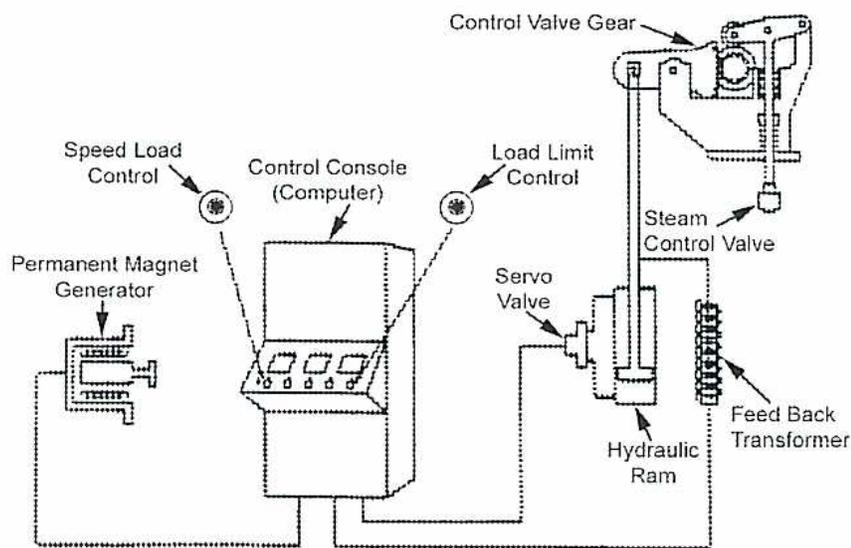
The diagram illustrates the components and connections of an electro-hydraulic governor system. On the left, a 'Permanent Magnet Generator' is shown with its output connected to a central 'Control Console (Computer)'. The console features two circular inputs labeled 'Speed Load Control' and 'Load Limit Control'. From the console, a line connects to a 'Servo Valve'. The servo valve is connected to a 'Hydraulic Ram', which in turn is connected to a 'Steam Control Valve'. A 'Feed Back Transformer' is positioned near the steam control valve, with a line connecting it back to the control console. Above the steam control valve, a 'Control Valve Gear' assembly is shown, connected to the valve stem.
Figure 25
Electro-Hydraulic Governor System
Fig. 26 shows an example of a basic electronic governor system for a turbine generator. The actuator controls the pilot valve to readjust the position of the steam control valve which maintains the desired speed as the generator load changes. The force to move the throttle valve is usually hydraulic power acting through the actuator.
![Figure 26: Electronic-Hydraulic Governor System. This schematic diagram shows the control system for a turbine-generator. At the top left, a 'Turbine Control Panel' and a 'Computer' are connected to an 'Electronic Governor' block. A 'Load Sensor' is also connected to this block. The 'Electronic Governor' sends signals to an 'Actuator' and a 'Shut-Off Valve'. The 'Actuator' is connected to a 'Throttle Valve' on the steam inlet line. The steam flows through the 'Throttle Valve' into the turbine. The turbine is coupled to a 'Generator'. Various sensors are connected to the turbine and its exhaust: an 'Inlet Pressure Sensor' on the steam line before the throttle valve, 'Magnetic Pickups' on the turbine shaft, and an 'Exhaust' line containing a 'Pressure Sensor' and a 'Temperature Sensor'. All these sensors feed back into the 'Electronic Governor'.](d4af765160d04ecef538e5066006dc77_img.jpg)
Figure 26
Electronic-Hydraulic Governor System
Pressure sensitive governors control a steady backpressure at the steam exhaust (outlet) of the turbine. They may also control the extraction steam pressure part way through the turbine. The extracted steam is discharged at a controlled pressure from that point. There is a combination of speed and pressure control to assure relatively steady turbine operation.
Backpressure governing uses a pressure sensing element on the line from the turbine. A set-point is entered into the controller which adjusts the position of the inlet steam throttle valve. If the pressure is low, the throttle valve opens to admit more steam and raise the exhaust pressure. If the pressure is high, the throttle valve closes to reduce the pressure. It is used in processes where the exhaust steam from the turbine is used for heating and where the pressure must be steady to ensure good heat control.
The efficiency of the backpressure turbine is very high because there are no exhaust steam losses. The disadvantage of this system is that the load output of the turbine is completely dependent on the demand for process steam.
Process steam is supplied by extracting steam, at a controlled pressure, from intermediate stages of a turbine. The control systems for extraction turbines are complex and allow changes in the turbine load without affecting the steam extraction. They also allow changes in the quantity of steam extracted without affecting the turbine output.
A schematic of such a system is shown in Fig. 27. When the extraction steam demand increases, the extraction pressure decreases forcing the pressure regulator piston downwards. This moves point G down. Since point D is kept stationary by the speed governor, the linkage makes point F move the extraction valve down. Point E moves the steam inlet valve up. Less steam then passes through the extraction valve, increasing the flow of extraction steam. The pressure remains constant.
As the load on the turbine increases, the speed decreases and the speed governor forces point A downwards. Since point B is fixed and point G is held stationary by the pressure regulator, points C and D move upwards. Points E and F move their respective valves upwards. More high-pressure steam is admitted. The extra steam flows via the more open extraction valve to the low-pressure stages of the turbine, resulting in increased load with no change in the extraction flow and pressure.
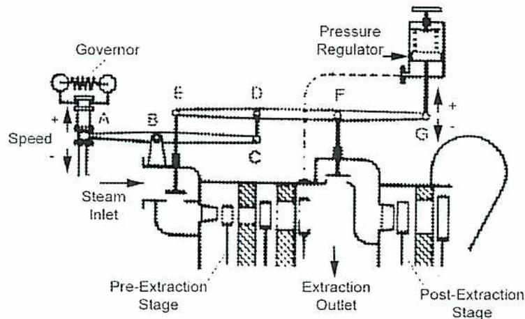
The diagram illustrates a combined speed and pressure governor system for an extraction turbine. On the left, a 'Governor' mechanism is connected to a 'Speed' input. A linkage arm connects point A (on the governor) to point B (a fixed pivot). Point A moves up (+) or down (-) based on speed. This movement is transmitted through a series of linkages: from A to C, then to D (which is held stationary by the speed governor), then to F, and finally to G. Point G is part of a 'Pressure Regulator' mechanism. The pressure regulator has a piston that moves up (+) or down (-) based on extraction pressure. The linkages control two valves: point E controls the 'Steam Inlet' valve, and point F controls the 'Extraction Outlet' valve. The turbine itself is shown with three sections: 'Pre-Extraction Stage', 'Extraction Outlet', and 'Post-Extraction Stage'. The diagram shows how the governor and pressure regulator work together to maintain constant extraction pressure and speed despite changes in load.
Figure 27
Combined Speed and Pressure Governor
Describe the purpose and design of steam turbine stop valves and control valves.
Trip valves, used to provide a positive isolation of the turbine steam supply, are always either fully open or closed. Throttle valves are adjusted as needed to control the turbine speed or load. All turbines require trip and throttle valves to operate safely. They also may have a combined trip and throttle valve. Trip and throttle (T/T) valves find applications in the following types of turbine arrangements:
In a single-valve turbine, all the steam flows through a single governing or throttling valve to the turbine nozzles. Changing the position of the throttling valve varies the steam flow and the pressure of the steam flowing to the turbine nozzles.
Trip and throttle valves have two separate and distinct functions. When a safety device such as an overspeed governor manually or automatically trips the trip and throttle valve, it acts as a quick-closing valve. The emergency trip drains the oil causing the servomotor to shut the steam valve. A manual throttling or block valve is used to bring the machine up to minimum governor speed and to totally block the steam in after shutting down. The throttling valve is not a 100% tight shut-off valve. The valve in Fig. 28 acts as a throttling and a trip valve.
![Cross-sectional diagram of a Double-Seated Steam Valve actuator system. The diagram shows a vertical stem connected to a valve assembly at the bottom. At the top of the stem is a 'Speed Changer' mechanism. To the right, a 'Servo Motor' is connected to the stem. The servo motor housing contains a 'High Pressure Oil Supply' inlet, an 'Oil Pilot Valve', and a 'Drain' at the bottom. A 'Servo Piston' is located within the servo motor housing. A legend indicates that diagonal hatching represents 'High Pressure Oil Supply' and cross-hatching represents 'Drain Oil'. The valve assembly at the bottom shows two seats.](b8d3d85b1575ec6abdcf1bd9ce438701_img.jpg)
Figure 28
Double-Seated Steam Valve
The trip and throttling valve can also operate as a hand throttle valve for starting and bringing the turbine up to speed. An example is shown in Fig. 29. It may be operated by hand using the handwheel on top of the actuator or by a motor actuator which opens or closes the valve. The trip hook or latch is used to trip the valve shut. When it is tripped shut, the valve must then be completely closed to be able to re-latch the trip mechanism.
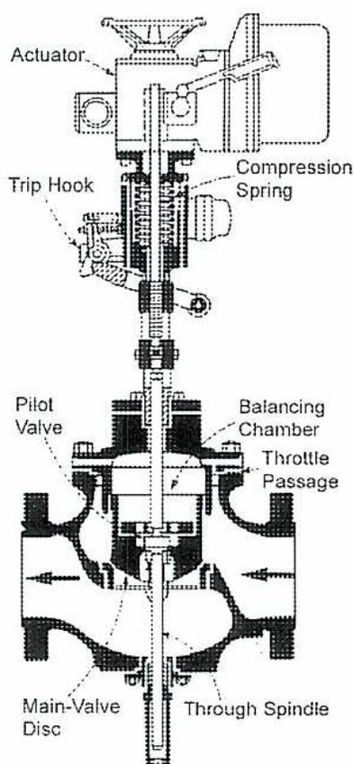
Figure 29
Trip/Throttle Valve
Fig. 30 shows a section through the steam chest of a large reaction turbine containing a shut-off or trip valve and two throttle valves. The first throttle valve controls the admission of steam to the turbine to about 80% of maximum load. The second controls the admission of steam through the bypass for the remaining 20%.
The trip valve is sometimes called the emergency stop valve. It is opened wide at startup and oil pressure keeps it in the open position. Spring pressure opposes the oil pressure and tries to shut the valve. In an emergency condition such as machine overspeed, the oil pressure is released and the spring closes the valve. The throttle valves are the balanced or “double seat” type. Steam flows past both the upper and lower seats eliminating forces tending to thrust the valve shut.
A steam strainer is fitted around the trip valve, and the valve spindles are sealed against leakage with metallic labyrinth bushings. The steam chest is separate from the turbine casing.
![A detailed cross-sectional diagram of a steam chest assembly for a turbine. On the left, a 'Stop & Trip Valve' is shown with its stem extending down through a 'Labyrinth Bushing' into the steam chest. In the center is the 'Main Steam Throttle Valve', and on the right is the 'Bypass Throttle Valve'. Both throttle valves have stems connected to 'Oil Chambers'. The steam chest has a 'Steam Inlet' on the left with a 'Steam Strainer'. The outlets from the throttle valves lead 'To First Stages' and 'To Later Stages' of the turbine. The entire assembly is shown in a cutaway view to reveal internal components like stems, bushings, and chambers.](fbfaa723129f8b8e3be651c6fe7cfab7_img.jpg)
Figure 30
Steam Chest with Stop and Throttling Valves
When a turbine has separate trip and throttle valves, the steam always goes through the turbine stop valve before going through the throttling or governor valves. Fig. 31 illustrates the separate stop valve and control valve of a steam turbine in a fossil fired generating plant. The assembly is separate from the turbine casing and is welded to the steam piping on the inlet and the steam chest on the outlet. Both valves are operated hydraulically and fit into the governor oil system of the steam turbine. The stop valve must be open to allow oil pressure to the stop valve and control valve. The turbine control valve is used to bring the turbine up to operating speed. The governor valves then begin to close or take over speed control as the turbine speed increases. The speed at which the governor takes control is called minimum governor speed . The governor assembly controls the throttle valves and thus the steam flow to the turbine. The speed adjustment on the governor controls the turbine speed when the turbine is on governor control.
![A detailed technical cross-sectional diagram of a turbine trip and governor system. The diagram shows a complex assembly of mechanical and hydraulic components. At the top, a 'Feedback linkage' connects to an 'Actuating linkage'. Below this, a 'Bypass valve' is shown. On the left side, there's a 'Baffle', a 'Stop valve', and a 'Leakoff' port. In the center, a 'Pilot' valve is connected to a 'Control valve'. A 'Guide sleeve' is positioned around the control valve assembly. 'Return springs' are located within the control valve housing. At the bottom, a 'Position transducer' is mounted on the left, and an 'Actuator cylinder' is shown at the very bottom center. Another 'Actuator cylinder' label points to a component on the right side of the lower assembly.](3267a096e9ca525744d8cd820f12eb59_img.jpg)
Figure 31
Turbine Trip and Governor System
Describe the purpose and design of steam turbine grid type extraction valves.
Grid type extraction valves are placed inside the turbine casing after the stage that the steam is extracted from. It controls the flow of steam to the remainder of the turbine. An example of a grid extraction valve is shown in Fig. 32.
The valve consists of a ported stationary disc and a ported grid that rotates. When the openings in the disc and the grid coincide, the valve is open and a full flow of steam passes to the remainder of the turbine. When the grid is rotated from the fully open position, the ports in the disc are partially covered by the grid. The steam flow is restricted and the desired pressure maintained. A pilot valve, operated by a pressure governor, controls the oil or steam supply pressure to either side of the operating piston. The operating piston rotates the grid valve with a gear and teeth. The linkage from the pressure governor is interlocked with the speed governor. Changes in the rate of steam extraction do not interfere with the turbine speed.
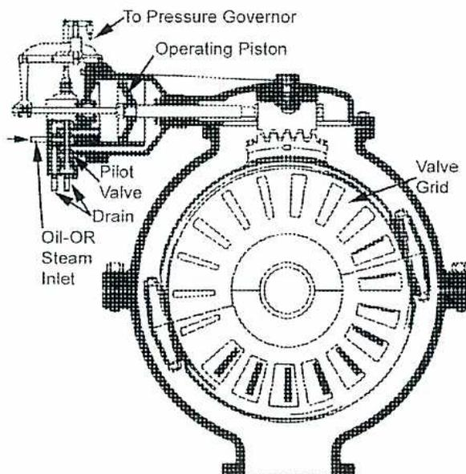
The diagram illustrates the internal mechanism of a grid type extraction valve. A large circular valve grid with radial spokes is shown in the center. Above it, an operating piston is connected to a gear that meshes with the grid. A pilot valve assembly is located to the left of the piston, with a line labeled 'To Pressure Governor' extending from it. Below the pilot valve, there are connections labeled 'Oil-OR Steam Inlet' and 'Drain'. The entire assembly is housed within a circular casing.
Figure 32
Grid Type Extraction Valve
A cutaway view of a grid type extraction valve is shown in Fig. 33.
![Figure 33: Grid Type Extraction Valve Construction. This is a cutaway schematic diagram of a turbine valve assembly. It shows a central rotor assembly with a rotatable grid. The assembly is housed within a casing. Key components labeled include: Rotatable Grid, Nozzle Ring, Rotor Assembly, Exhaust Flow, Stationary Diaphragm, Casing, Inlet Flow, and Extraction/Induction Flow. Arrows indicate the direction of steam flow entering from the bottom, passing through the grid, and exiting through the top and side.](c803f6f6e2c49429d2951832bd0f208d_img.jpg)
Figure 33
Grid Type Extraction Valve Construction
Plant process or heating needs may require that steam is extracted at more than one pressure. An example of a steam turbine with two extraction pressures is shown in Fig. 34. Steam passes through the admission valve and then through the first stages of the turbine. Steam is bled off upstream of the first extraction grid valve. The steam that passes through the first grid valve passes through more turbine blading. More steam is bled off upstream of the second extraction grid valve. The remaining steam passes through the second extraction grid valve and the remaining turbine blading. It exits the turbine blading and enters the surface condenser.
![Figure 34: Turbine with Two Grid Type Expansion Valves. This is a schematic diagram of a steam turbine system. Steam enters from the left through admission valves into a steam chest. It then passes through a series of turbine stages. Two extraction valves, labeled 'Extraction Valves No. 1' and 'Extraction Valves No. 2', are positioned at different points along the turbine's length to bleed off steam. The remaining steam exits the turbine through an exhaust annulus and is directed via piping to a condenser.](d5fc881e4328d6a2e76c9576408ced49_img.jpg)
Figure 34
Turbine with Two Grid Type Expansion Valves
Describe the purpose and design of steam turbine casing pressure relief systems including rupture diaphragms.
Some manufacturers fit rupturing diaphragms to the turbine exhaust branches. They are designed to protect the condenser and LP turbine against overpressure. If over pressured they rupture or blow out. Fig. 35 shows a condensing turbine with a relief diaphragm at the top of the exhaust. Fig. 36 shows steam flowing out the rupture diaphragm on a low-pressure casing. The rupture diaphragms protect the casing as well as the condenser. The pressure can reach rupture pressure if the condenser is not functioning properly. Causes of condenser malfunction are air leaks or loss of cooling water.
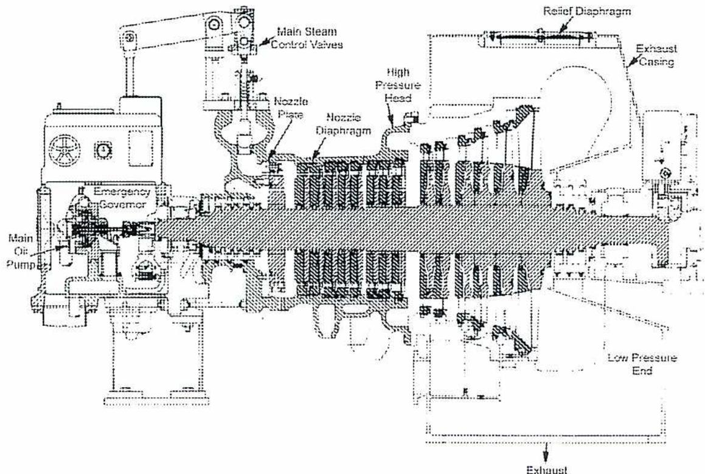
A detailed cross-sectional diagram of a steam turbine. On the left, the 'Main Steam Control Valves' are shown at the top, connected to an 'Emergency Governor' and a 'Main Oil Pump'. Steam enters from the top through a 'Nozzle Plate' and a 'Nozzle Diaphragm' into the 'High Pressure Head'. The turbine consists of multiple stages of blades and diaphragms. At the top of the 'Exhaust Casing', a 'Relief Diaphragm' is indicated. The turbine tapers to a 'Low Pressure End' at the bottom, which leads to an 'Exhaust' outlet.
Figure 35
Condensing Turbine with Relief Diaphragm
Figure 36
Rupture Disc Test on LP Casing
Describe the purpose and design of steam turbine overspeed trips.
The mechanical overspeed trip on a steam turbine is an integral part of the governing system. It prevents steam from entering the turbine if the speed becomes dangerously high. The mechanical overspeed trip gear is generally located at the front end of the high-pressure turbine shaft and is designed to shut off the steam supply to the turbine. The trip speed is usually 10 to 12% above the standard operating speed.
A basic trip bolt in the normal operating position is shown in Fig. 37. It consists of a weighted bolt that is held inside a specially made hole in the shaft. A spring is held in compression to keep this trip bolt inside the shaft during standard operating conditions.
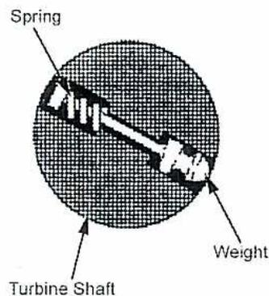
A cross-sectional diagram of a circular turbine shaft. Inside the shaft, a bolt is shown in a retracted position. A coiled spring is wrapped around the bolt, pushing it towards the center. The bolt has a cylindrical weight at its outer end. Labels with leader lines point to the 'Spring', the 'Weight', and the 'Turbine Shaft'.
Figure 37
Trip Bolt
If the turbine shaft reaches the overspeed setting, the spring compression is overcome and the bolt will be thrown out by centrifugal force, as shown in Fig. 38.
Figure 38
Overspeed Trip Position
Fig. 39 shows a mechanical overspeed trip system using a mechanical linkage to control the flow of steam to the turbine, during standard operating conditions.
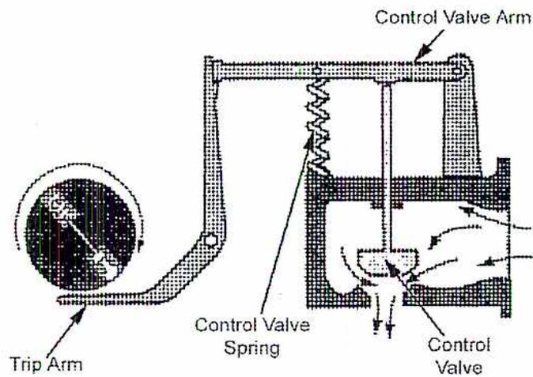
Figure 39
Mechanical Overspeed Trip System (Turbine Normal Operation)
Fig. 40 illustrates an overspeed situation (movements are exaggerated for clarity). Using the trip lever, the overspeed trip can be manually operated at any time.
The diagram illustrates a mechanical overspeed trip system in a tripped state. On the left, a circular cross-section of a shaft shows a 'Trip Arm' bolt protruding from its surface. To the right, a vertical rod, labeled 'Control Valve', is shown in a raised position. This rod is connected to a horizontal 'Control Valve Arm'. A coiled 'Control Valve Spring' is wrapped around the rod, indicating it is under tension. The raised position of the rod and arm suggests that the trip mechanism has been activated, overriding the spring force to close the control valve.
Figure 40
Mechanical Overspeed Trip System (Turbine Tripped)
The overspeed trip, shown in Fig. 41, shows clearly the operating principle of all overspeed trips for turbines with hydraulic governor systems. The spring-loaded tripping bolt, located in the turbine shaft, has the centre of gravity slightly off the centre of the shaft in the direction of the bolt head. The nut, at the end of the bolt, provides a stop for the bolt in the tripped position and for the tripping speed adjustment. During standard operation, the main spring holds the trip rod against the tripping lever. Piston A closes the oil drain and the high-pressure oil passes between pistons A and B, to the stop valve. Note: The gear is shown in the set position.
Figure 41
Emergency Overspeed Trip
When the turbine speed increases to the trip setting, usually 110% of operating speed, the following occurs:
Fig. 42 shows a bolt type overspeed trip located in the high-pressure turbine shaft end. The bolt is eccentric in the shaft, but the spring holds it in position at normal speeds. The oil supply, maintaining the steam valves open, passes through ports P and U in the standard position. At an overspeed condition, the pin (bolt) trips the latch R. When R is tripped, the trip relay spring lifts the trip relay piston so that P is closed off and U is open to drain.
![A detailed cross-sectional diagram of an overspeed trip gear mechanism. At the top, a 'Trip Relay Spring' is shown. Below it, a 'Trip Lever' is connected to a 'Rotating Shaft'. An inset circle shows a close-up of the shaft with a 'Spring-Loaded Trip Bolt' that is eccentric. The trip lever is connected to a 'Trip Relay Stem' which extends down to a 'Trip Relay Cylinder'. Inside the cylinder is a 'Trip Relay Piston'. Two ports are labeled: 'P' (oil supply) and 'U (Oil Drain)'. The diagram illustrates the mechanical linkage that trips the piston at high speeds.](d4e9f8f6bf5d7853ecae9c9633900af1_img.jpg)
Figure 42
Overspeed Trip Gear
In Fig. 43, the turbine shaft contains a notched gear wheel. Inductive sensors, also known as magnetic speed pickups, are mounted in or on the turbine casing. As the gear teeth pass the sensors, the principle of magnetic induction generates an AC voltage that can be read by the ECM (Electronic Control Module), which contains pulse-counting sensors.
These units then convert the electronic pulse signals to revolutions per minute for calculating the turbine shaft speed. Some steam turbines' overspeed trip systems, installed with three magnetic speed pickups, require that two out of the three sensors agree the unit has reached the overspeed condition before a trip is initiated.
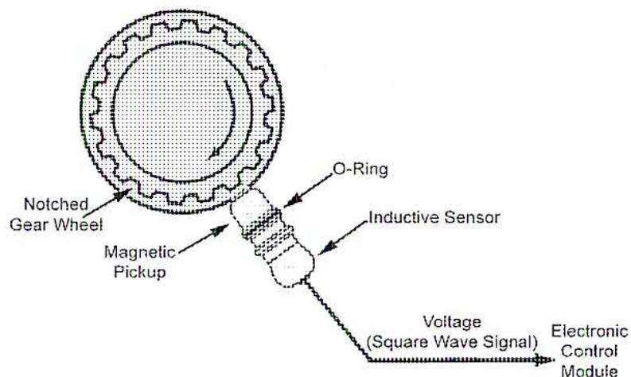
The diagram illustrates a magnetic speed pickup sensor. On the left is a 'Notched Gear Wheel'. To its right is a 'Magnetic Pickup' (also labeled 'Inductive Sensor'). The sensor is held in place by an 'O-Ring'. A wire extends from the sensor, labeled 'Voltage (Square Wave Signal)', which connects to an 'Electronic Control Module'.
Figure 43
Magnetic Speed Pickup Sensor
When the measured speed reaches the setpoint, an action is initiated to shut the emergency stop valve. Referring to Fig. 44, electronic signals are sent from the electronic control module to the trip block. If the electronic control module receives input from 2 out of 3 speed pickups that there is an overspeed condition, it will then shut off the supply of hydraulic oil that maintains the stop valve in an open position. Another signal is sent from the electronic control system to close the control valve and stop the flow of steam to the turbine.
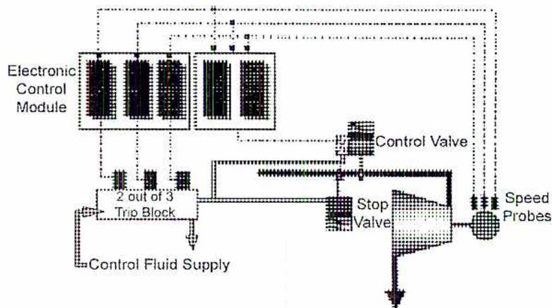
The diagram shows an 'Electronic Control Module' on the left. It has connections to a '2 out of 3 Trip Block' and to 'Speed Probes'. The 'Trip Block' is connected to a 'Control Valve' and a 'Stop Valve'. The 'Control Valve' is connected to a 'Control Fluid Supply'. The 'Stop Valve' is connected to a pipe leading downwards. There are also lines connecting the 'Electronic Control Module' to the 'Control Valve' and 'Stop Valve'.
Figure 44
Electro-Hydraulic Control System
Describe the purpose and design of steam turbine supervisory equipment.
Steam turbines come in many sizes from drivers of small pumps and fans to multi-case power station generator drivers. They range in output from a few kW to over 1000 MW. The smallest turbines may have a little instrumentation such as a few temperature and pressure gauges. They may have vibration monitoring that is monitored in the control room. Some turbines are started and stopped from remote locations.
The larger a turbine, the more likely it is to have extensive supervisory equipment to monitor its operation. Fig. 45 illustrates the supervisory equipment connected to a turbine and generator set. This schematic represents a layout with separate panels or cubicles, which can be located next to the machine in the field or in the control room. The recorders and indicators can also be field or control room mounted. All of the data from the machine may also be fed into a digital control system. Vibration monitoring input is often sent into a vibration monitoring system to analyse readings and to predict problems.
![Figure 45: Turbivisory Equipment Schematic Diagram. This diagram shows the monitoring system for a turbine and generator set. At the top, a schematic of the turbine and generator is shown with various sensors: Tachogenerator, Eccentricity Detectors, Thermocouples, Vibration Detectors, and Differential Expansion Detectors. These sensors are connected to a central 'CUBICLES' section containing four boxes: 'Miscellaneous', 'Eccentricity', 'Differential Expansion', and 'Vibration'. Below the cubicles is the 'RECORDERS' section with boxes for 'Speed', 'Eccentricity', 'Differential Expansion', 'Temperature', and 'Generator Output'. At the bottom is the 'INDICATORS' section with circular symbols representing individual gauges. An 'Output' line is shown exiting the generator.](7e670a2b556b53ea9002dfff3a420e08_img.jpg)
Figure 45
Turbivisory Equipment Schematic Diagram
Fig. 46 illustrates the locations of instruments on the three cases of a large turbine. The bearings for each rotor normally have vibration and temperature probes. Thrust bearings have temperature (oil and/or pad) indications. High-thrust bearing temperatures indicate high-thrust loads. There are eccentricity coils for the HP (high pressure) and IP (intermediate pressure) rotors located next to the thrust bearings. The differential expansion indicators for the HP and IP cases are located at the opposite end of the shaft from the thrust bearings. Differential expansion refers to the relative difference in expansion between the rotor and the turbine case. If excessive, it will lead to the rotor blades rubbing the turbine diaphragm. The thrust bearing is a fixed location and the shaft movement is measured as far as possible from the thrust bearing.
The diagram illustrates the layout of a large turbine shaft with various supervisory instruments. From left to right, the components and labels are as follows:
Figure 46
Layout of Supervisory Equipment
The expansion of the HP and IP rotors is shown in Fig. 47. The HP case has a thrust bearing and a thrust collar at the front of the machine. The bearing pedestals have sliding feet for expansion and indicators to monitor movement. The cylinders are anchored at the exhaust end and expand towards the inlet. The flexible coupling between the two rotors takes up the relative movement of the shafts. The arrows in Fig. 50 indicate expansion of the cylinders and rotors.
When starting up the machine, careful monitoring of expansion is essential. Operators soon know the positions of the machine when cold, when starting up, and when in standard operation.
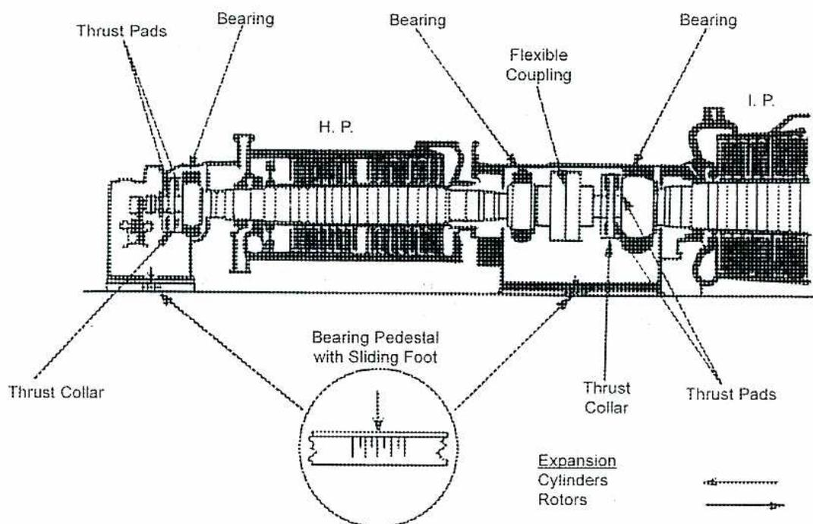
The diagram illustrates the internal components of a turbine, specifically focusing on the expansion of IP and HP cylinders. Key components labeled include Thrust Pads, Bearings, a Flexible Coupling, H.P. (High Pressure) and I.P. (Intermediate Pressure) sections, Thrust Collars, and a circular inset showing a 'Bearing Pedestal with Sliding Foot'. Arrows indicate the expansion of cylinders and rotors.
Figure 47
Expansion of IP and HP Cylinders
Vibration monitoring systems are often separate from the remainder of the monitoring equipment on large machines. The turbine in Fig. 48 has a computer based monitoring system. Vibration sensors on the machine send signals to the transducer panel. Signals from the transducer panel then go to the vibration monitoring input unit. Digital signals are fed to the vibration monitoring computer.
The computer system is used to analyze the vibration data and maintain a history on the equipment. The system in the graphic also has a remote service station which can be used by engineers and or managers to view and analyze the vibration data.
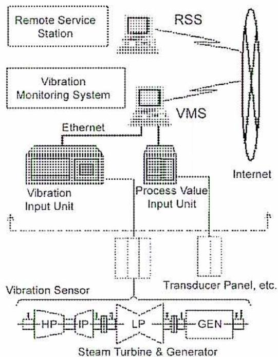
The diagram illustrates a Vibration and Monitoring System architecture. At the bottom, a Steam Turbine & Generator is shown with components labeled HP (High Pressure), IP (Intermediate Pressure), LP (Low Pressure), and GEN (Generator). Above the turbine, a Vibration Sensor and a Transducer Panel, etc. are connected to a Vibration Input Unit and a Process Value Input Unit . These units are connected via an Ethernet network to a Vibration Monitoring System (VMS). The VMS is connected to a Remote Service Station (RSS) and the Internet . The RSS is also connected to the Internet. The entire system is represented by dashed boxes and lines, indicating a networked monitoring setup.
Figure 48
Vibration and Monitoring System
B1.2